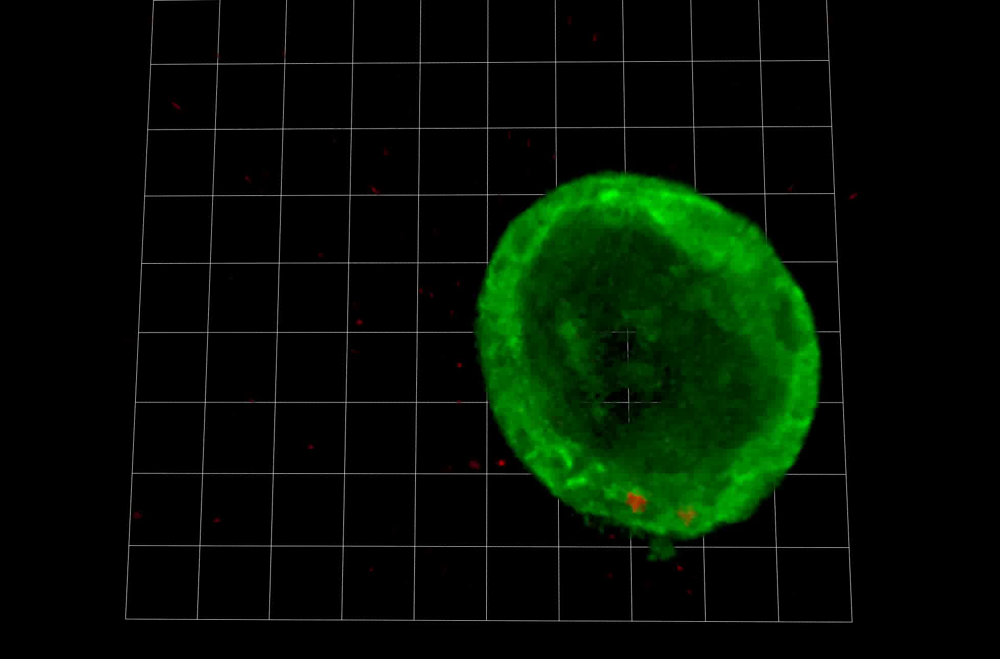
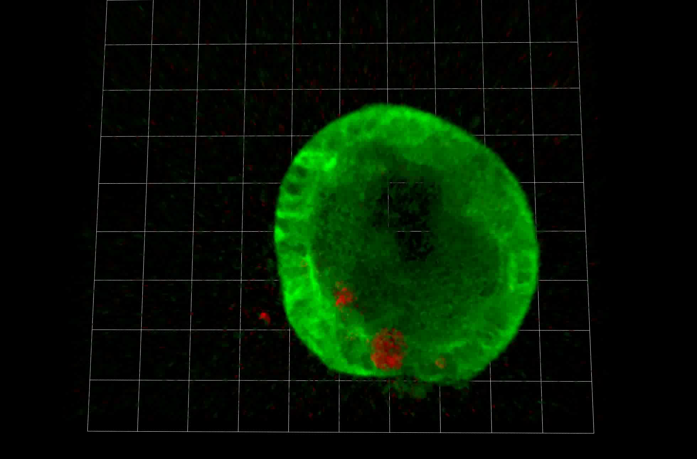
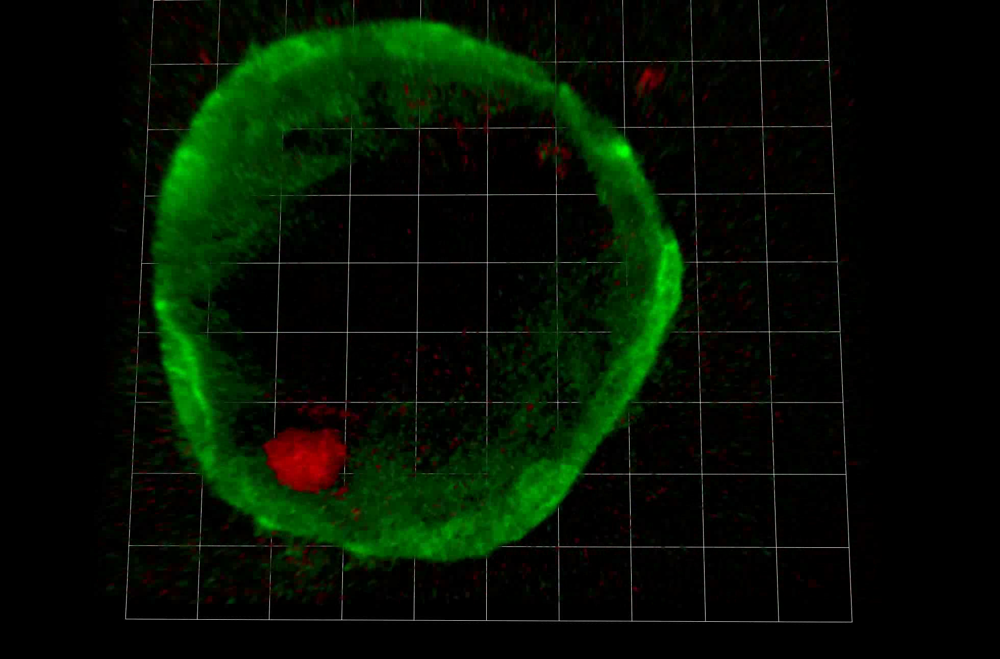

A local response to Chlamydia infection
A cultured fallopian-tube organoid shows changing red inclusions within a green epithelial outline. This is the authors’ three-dimensional reconstruction of observed fluorescence stacks. It supplies a local experimental example, not a recording of infection ascending through a person’s reproductive tract.
Supplementary Movie 1
Focus the native video region to pan using arrows or Home/End. Playback and seek readouts use publication-file seconds. The lossless browser file is 227 MB; the original MOV may require a desktop video player.




Ordered observations and interpretation
- Frame 0 supplies the opening green-shell and red-signal context.
- Frames 250 and 500 show larger and redistributed red inclusions near the green boundary; the source’s rendered viewpoint also changes.
- Frame 748 supplies the later configuration. The authors interpret the continuous movie as expulsion of inclusions or infected cells into the lumen, followed by bursting. The selected stills alone do not establish the exact crossing or rupture path.
Human fallopian-tube epithelial organoids were derived from benign-surgery samples; the authors used anatomically normal tubes. This is not a whole healthy-volunteer or fertility-outcome designation. This system retained substantial epithelial integrity in the authors’ account; it does not show inevitable scarring, tubal occlusion or infertility.
Kessler et al. (2019), Chronic Chlamydia infection in human organoids increases stemness and promotes age-dependent CpG methylation, Nature Communications, Supplementary Movie 1. © Authors, CC BY 4.0. Complete source field and frame order retained. Browser derivative is losslessly encoded; all 749 decoded RGB frames match the original under the recorded decoder. Stills are unchanged complete decoded frames.